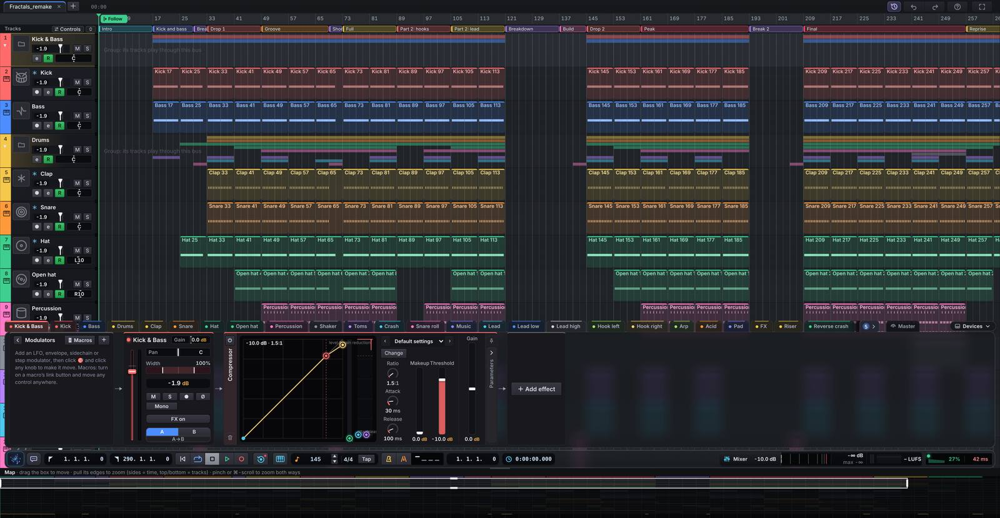
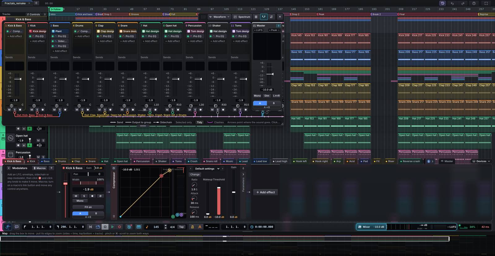
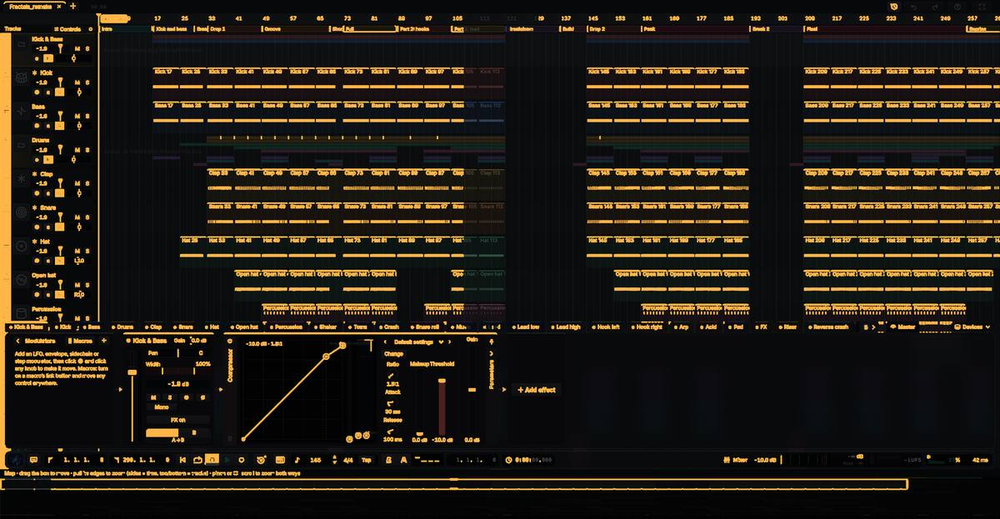
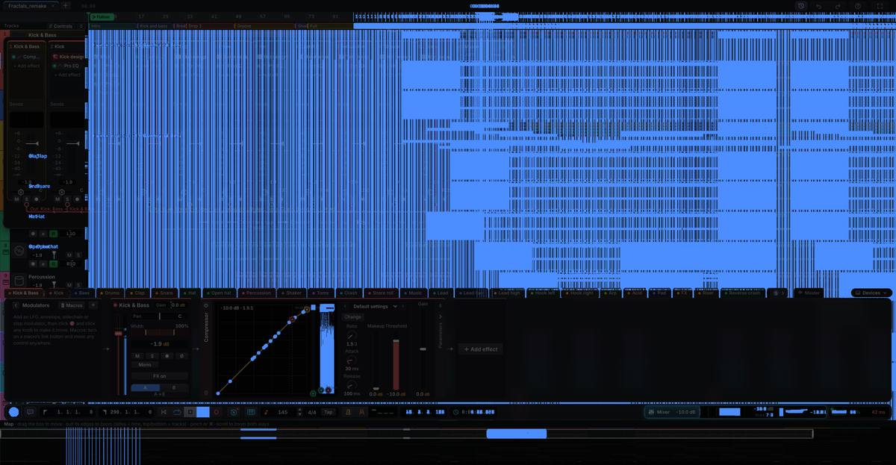
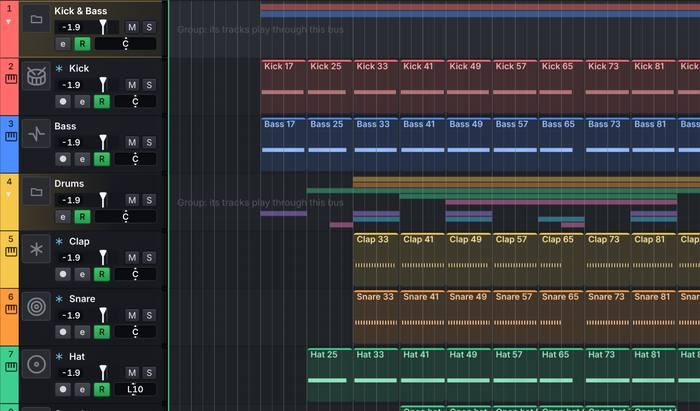
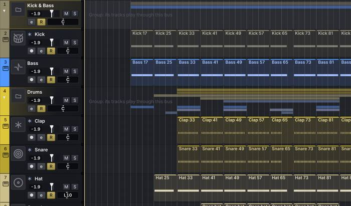
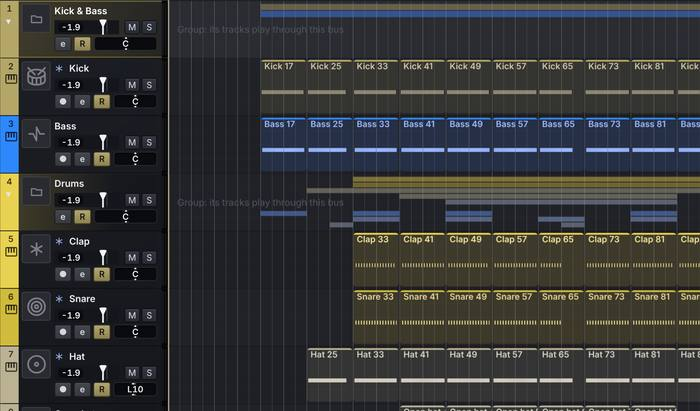
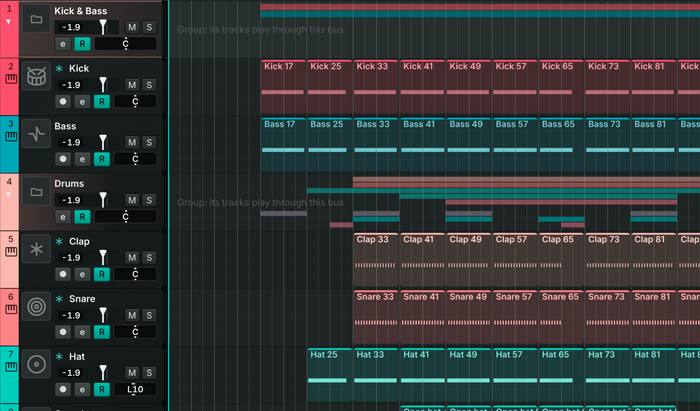

Hours of mixing on a 32-inch OLED in a dim room. This page measures today's app at your size (v0.263, Fractals demo, 2194 × 1139 points at 1.75×) and proposes 22 refinements and settings that keep today's look: colours, buttons, icons, Inter 11/12/13/15, the glass, and the picks G3, W1, L2, A1, M3, N3. Every option below is live on a mock of the real arrangement and docked mixer at 1:1, with today on the left and the option on the right. Pick with the buttons; the bar at the bottom gives the line to paste.
Scripts in tools/design-lab/ux2/: shoot_measure.py (screenshots, every visible text with its colour and size, animated pixels), contrast.py (WCAG 2 and APCA), cvd.py (colour-vision simulation and palettes), oled.py (picture level and static bright parts). Backgrounds were read from the screenshots, so glass and transparency count.
| Text | Where | Size | Colour on background | WCAG | APCA Lc |
|---|
WCAG 2 asks 4.5:1 for small text. APCA asks about Lc 75 for body text, Lc 60 for other content text and Lc 45 as a floor for small labels at 11 to 12 px; negative Lc means light text on dark. 90 % of AudioLab's text is 11 px.
| Palette | Colours | Normal | Protan | Deutan | Tritan | Closest pair |
|---|
Smallest CIEDE2000 distance between any two of the eight track colours, as the clip's edge (full colour) / the clip's body (36 % over the lane). Under 10 two tracks are hard to tell apart at a glance; under 3 they look the same. Simulation: Machado et al. 2009 at full severity (dichromacy, the worst case). Red-green deficiencies affect about 1 in 12 men.








Short findings with their sources. The full write-up is docs/research-ux-long-sessions.md.
UX2 picks: (none)